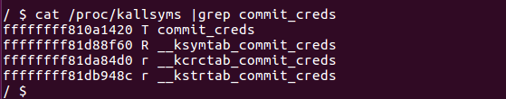
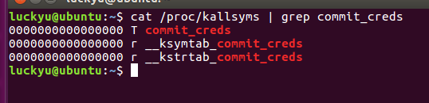
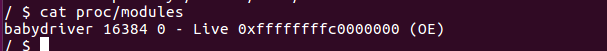

最近学习了一些linux kernel的基础知识和几个漏洞的利用办法
进程相关
进程是处于执行期的程序以及相关的资源的总称，是操作系统资源分配的单位。
进程的资源包括：
1.打开的文件
2.挂起的信号
3.内核的内部数据
4.处理器的状态
5.内存映射的内存地址空间 等等
Linux内核通过一个被称为进程描述符的task_struct结构体来管理进程，这个结构体包含了一个进程所需的所有信息。它定义在include/linux/sched.h文件中
可以在https://code.woboq.org/linux/linux/include/linux/sched.h.html#task_struct中查看
进程的权限是用cred结构体记录的，经常会利用这个结构体来进行提权
1 | struct task_struct { |
cred结构体定义如下：
1 | struct cred { |
其中包含了进程的权限（uid,gid,suid）等信息，如果我们能够修改cred结构体，就修改了这个进程的权限
内核对象缓冲区管理
内核对某些对象（如 task_struct）的使用是非常频繁的，所以用户进程堆管理常用的基于搜索的分配算法比如First-Fit（在堆中搜索到的第一个满足请求的内存块）和 Best-Fit（使用堆中满足请求的最合适的内存块）并不直接适用，而应该采用某种缓冲区的机制。
现在频繁使用的是linux kernel 2.6.22版本引入的slub的内核对象缓冲区分配器，它逐渐取代了以前的slab分配器。利用slub的分配方式我们可以进行类似于heap uaf的相关利用
漏洞保护机制
KASLR
类似于ASLR，是内核地址空间随机化，KASLR技术可以让kernel image映射的地址相对于链接地址有个偏移
kaslr的主要流程可以分为以下几步：
1.在一个随机的物理地址加载内核
- 映射内核在vmalloc域的一个随机虚拟地址
- 映射一些变量以及符号表，偏移地址和image一样
内核地址显示限制
通常情况下我们可以利用cat /proc/kallsyms来获得内核相关函数地址，如commit_creds:

而Linux kernel可以利用kptr_restrict的值来指示是否限制通过/proc和其他接口暴露内核地址，其数值代表：
0：默认情况下，没有任何限制。
1：使用％pK格式说明符打印的内核指针将被替换为0，除非用户具有CAP_ SYSLOG特权
2：使用％pK打印的内核指针将被替换为0而不管特权。
当限制查看内核地址时，其地址会显示为0：

要禁用该限制可以使用下面命令:sudo sysctl -w kernel.kptr_restrict=0
PS:同样的值还有dmesg_restrict,如果我们将其设置为1，就不能通过demsg查看kernel信息了
smep/smap
这部分信息和绕过办法在ctf-wiki上有详细说明
smep全称是Supervisor Mode Execution Protection，管理模式执行保护
其作用是保护内核使其不允许执行用户空间代码，开启smep之后，当CPU处于ring0模式时，执行用户空间的代码会触发页错误。
检查smep是否开启：cat /proc/cpuinfo | grep smep
smep保护原理及绕过方法：
操作系统是通过CR4寄存器的第20位的值来判断smep是否开启
第20位 = 1时：smep开启
第20位 = 0时：smep关闭
可同通过mov指令给CR4寄存器赋值从而达到关闭smep的目的，相关的mov指令可以通过ropper，ROPgadget等工具查找（推荐使用ropper，相比之下速度更快）。
smap全称是Supervisor Mode Access Protection，管理员模式访问保护，其与smep类似，是通过CR4寄存器的第21位判断。
调试办法
如果题目没有给vmlinux，我们需要从内核映像中将其提取，利用extract-vmlinux：./extract-vmlinux ./bzImage > vmlinux
然后修改boot.sh加入-gdb tcp:1234，重新打包即可
然后启动qemu，由于调试过程我们需要在gdb中加载符号表（为了可以直接对驱动中函数下断点），先查询驱动加载地址：cat /sys/module/core/sections/.text或者cat proc/modules

然后在qemu外启动gdb:gdb vmlinux -qpwndbg> add-symbol-file ./babydriver.ko 0xffffffffc0000000pwndbg> target remote:1234
这样我们就可以愉快的调试了